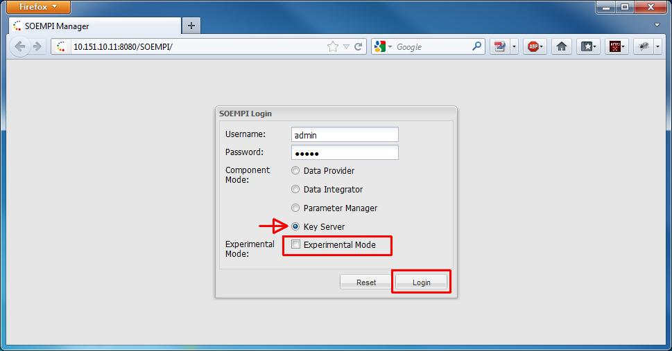
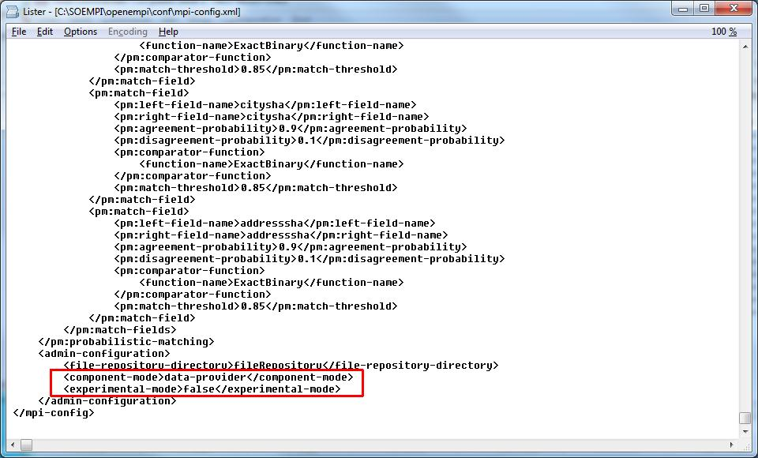

Configure Component type
Ways to select component type.
- On the UI: on the Login screen at login. During the login process your selection will be saved.

- In the configuration file (mpi-config.xml) at the end there's an admin-configuration section,
the component-mode tag specifies the component type. It can be "data-provider", "data-integrator",
"key-server", "parameter-manager". If you run SOEMPI in parameter-manager mode, it automatically acts as
a key-server too, this is the only unified mode right now. You can change these settings through the UI (see the configuration
sections later) or by manually editing the XML.
